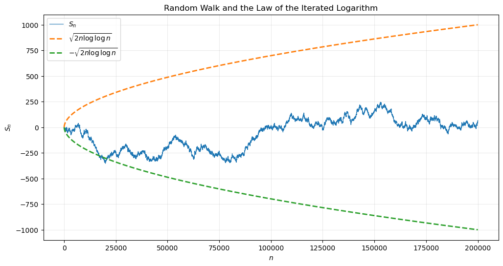

In words, the convergence holds for every outcome except possibly on a set of probability zero.
1.1.1 Example
Consider the probability space \(\Omega=[0,1]\), equipped with the Borel \(\sigma\)-algebra \(\mathcal F=\mathcal B([0,1])\), and the Lebesgue probability measure. Define the sequence of random variables
1.4 Relationships Between Different Types of Convergence
In general, we have the following chain of implications:
\[
\boxed{
X_n
\overset{\mathrm{a.s.}}{\longrightarrow}
X
\quad\Longrightarrow\quad
X_n
\overset{P}{\longrightarrow}
X
\quad\Longrightarrow\quad
X_n
\overset{d}{\longrightarrow}
X.
}
\]
In general, the converse implications are false.
1.5 Why Do We Study Different Modes of Convergence?
The various notions of convergence of random variables and random vectors are among the central concepts of modern probability theory.
They form the mathematical foundation of many advanced subjects, including Mathematical Statistics, Mathematical Finance and Stochastic Differential Equations.
Entire graduate courses are devoted to understanding the relationships between these different notions of convergence and learning the powerful theorems associated with them (Slutsky’s theorem, the Continuous Mapping Theorem, Skorokhod’s Representation Theorem, Prokhorov’s Theorem, and many others).
Fortunately, our goals in this course are much more modest.
Since this is an introductory course in inferential statistics, we only need to understand
the definitions of the main types of convergence;
how to interpret them intuitively;
where they appear in the Law of Large Numbers and the Central Limit Theorem.
2 Limit Theorems
These theorems describe the behavior of random variables and random samples when the sample size becomes large. They form the mathematical foundation of modern statistics, statistical inference, and machine learning.
We begin with three fundamental results:
Poisson Limit Theorem;
Weak Law of Large Numbers (WLLN);
Central Limit Theorem (CLT).
2.1 Poisson Limit Theorem
The Poisson distribution naturally appears as the limit of a binomial distribution when the number of trials is large while the probability of success is small.
The Central Limit Theorem is one of the most important results in probability and statistics since it explains why normal distributions appear so frequently in practice.
# --------------------------------------------------# Reproducibility# --------------------------------------------------seed =35local_rng = np.random.default_rng(seed)maximum_sample_size =200_000increments = local_rng.choice( [-1, 1], size=maximum_sample_size)partial_sums = np.cumsum(increments)sample_sizes = np.arange(1, maximum_sample_size +1)valid_indices = sample_sizes >=3lil_envelope = np.full( maximum_sample_size, np.nan)lil_envelope[valid_indices] = np.sqrt(2* sample_sizes[valid_indices]* np.log(np.log(sample_sizes[valid_indices])))plt.figure(figsize=(12, 6))plt.plot( sample_sizes, partial_sums, linewidth=0.8, label="$S_n$")plt.plot( sample_sizes, lil_envelope,"--", linewidth=2, label=r"$\sqrt{2n\log\log n}$")plt.plot( sample_sizes,-lil_envelope,"--", linewidth=2, label=r"$-\sqrt{2n\log\log n}$")plt.xlabel("$n$")plt.ylabel("$S_n$")plt.title("Random Walk and the Law of the Iterated Logarithm")plt.legend()plt.show()

4 Multidimensional Central Limit Theorem
The Central Limit Theorem naturally extends to random vectors.
Let \(X_1,X_2,\ldots \in\mathbb R^d\) be independent and identically distributed random vectors satisfying \(E[X_i]=\mu\), and let \(\Sigma=\operatorname{Cov}(X_i)\) be their covariance matrix.
4.1 Simulation: The Multidimensional Central Limit Theorem
In this simulation, we illustrate how the multidimensional Central Limit Theorem works.
We generate independent random vectors \(X_1,X_2,\ldots,X_n\in\mathbb R^2\), where each coordinate is sampled independently from the uniform distribution